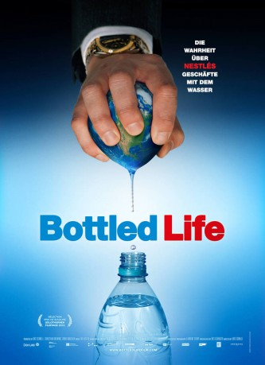

IMDB-Wertung: 6.7 / 10
IMDB-Wertung: 6.7 / 10  Metascore:
Metascore: 
Wie verwandelt man Wasser in Geld? Es gibt eine Firma, die das Rezept genau kennt: Nestlé. Dieser Konzern dominiert den globalen Handel mit abgepacktem Trinkwasser.
 IMDB-Wertung: 6.7 / 10 Metascore:
Wie verwandelt man Wasser in Geld? Es gibt eine Firma, die das Rezept genau kennt: Nestlé. Dieser Konzern dominiert den globalen Handel mit abgepacktem Trinkwasser.
Jahr: 2012
Dauer: 89 Minuten
FSK: 0
Land: Schweiz Studio: W-FilmTonspuren:
Untertitel:
Auflösung: SD (640x360) Größe: 454 MB
Genre: Drama, Abenteuer, Dokumentation
Regisseur: Urs Schnell
Drehbuch: Lawrence Edward Watkin
Soundtrack:
Darsteller:
Datei: X:\Dokumentationen\Dokus(A-Z)\Bottled Life - Das Geschäft mit dem Wasser (2012, FSK0, 640x360).mp4 seit 16.05.2017
Festplatte: HD Serien(SU-Z)+Dokus+Musik
 Es gibt insgesamt 34 Filme in der Gruppe 'Dokumentationen\Dokus(A-Z)'
Es gibt insgesamt 34 Filme in der Gruppe 'Dokumentationen\Dokus(A-Z)'